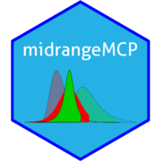
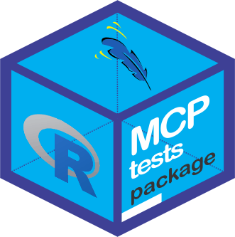

Todo esse material é baseado em três referências, que recomendamos a todos:
Acreditamos que a linguagem R, conseguiu caminhar com suas próprias pernas, devido a versatilidade e contribuição computacional estatística para ciência. Hoje as áreas de atuação da linguagem são aplicadas nas mais diversas áreas da ciência.
Entretanto, cremos que a facilidade de utilização dessa linguagem, exitem dois marcos, um antes e outro depois de Hadley Wickham, o Cientista Chefe do RStudio, que por sinal, os dois livros citados acima são deles. Entendemos, que alguns programadores haja rejeição rejeitem a utilização interfaces gráficas ao usuário R, como o RStudio, as famosas GUI. Mas é notório que os recursos de alguns pacotes, inclusive desenvolvidos pelo próprio Hadley Wickham, auxiliados com os recursos do RStudio, nos economiza um bom tempo de como programar ou desenvolver determinadas atividades. Dessa forma, podemos tornar o nosso tempo de trabalho mais eficiente.
Um exemplo referente a esse assunto é a criação de uma Website para o pacote. Mesmo usuários da linguagem R que não tem afinidades com o desenvolvimento de páginas Web, podem dessenvolver a sua com o auxílio de um pacote chamado pkgdown. Iremos observar que em um passe de mágica, usando o RStudio, poderemos não só criar uma página para o pacote, mas também disponíbilizá-lo em um repositório do GitHub, por exemplo. Claro que, à medida que vamos necessitando de algo mais complexo, haverá um maior esforço em estudar um pouco mais sobre o assunto, para atingir o objetivo desejado. Mais a frente, falaremos sobre como desenvolver uma Website para o seu pacote.
Por fim, há uma carência de materiais, em Português, que nos permita consultar sobre desenvolvimento de pacotes em R, e consiga mostrar desde a parte introdutória até a avançada, assim como também a experiência de problemas solucionados que ainda geram dúvidas sobre esse assunto. Dessa forma, isso motivou a criação desse material. Esperamos, que você leitor, também possa fazer parte dessa contribuição, trazendo também as suas experiências, para que possamos acrescentar a esse material.
Escolha do nome e logo do pacote
Quando pensamos em desenvolver um pacote, temos a impressão que o conjunto de rotinas criadas auxiliará de alguma forma na solução de muitos problemas, sejam estes dos mais diversos possíveis. E esse pacote pode ter uma relevância muito importante, para diversas áreas.
O que falta ao nosso olhar, em muitos pacotes sobre o CRAN, é a publicidade para aumentar o alcance da acessibilidade para os usuários. esse comportamento, vem mudando há um tempo. Percebemos que repositórios de códigos como o GitHub, Gitlab, dentre outros, estão auxiliando muito bem essa publicidade, uma vez que esses repositórios permitem a hospedagem de websites para apresentação do pacotes, tutoriais, bugs, e muito mais. Isso proporciona tanto uma melhor apresentação quanto um maior engajamento dos usuários na contribuição e melhoria do pacote.
Mais a frente, exploraremos melhor esse tema. De início, iremos apresentar o cartão de visitas do pacote, que é o nome e a logo para a sua identificação.
Visitando o manual do R, Writing R Extensions, a recomendação é
O campo obrigatório ‘Package’ [como um dos itens no arquivo DESCRIPTION do pacote] fornece o nome do pacote. Deve conter apenas letras (ASCII), números e ponto, ter pelo menos dois caracteres e começar com uma letra e não terminar com um ponto.
Percebemos que as recomendações são bem simples. Contudi, no livro R Packages, Hadley Wickham e Jenny Bryan apresentam algumas recomendações pragmáticas, que consideramos pertinentes. Inclusive é um puxão de orelha aos meus pacotes desenvolvidos. Apresentamos aqui alguns desses comentários:
- Escolha um nome exclusivo que seja fácil para o Google, isto é, para que is usuários encontrem mais facilmente;
- Não escolher um nome que já esteja em uso no CRAN, uma vez que se desejar submeter o seu pacote, certamente, será rejeitado, e vale a pena também se perguntar:
- Há um pacote em desenvolvimento, por exemplo, no GitHub que já tem algum histórico e parece estar caminhando para a publicação?
- Este nome já é usado por outro software ou por uma biblioteca ou estrutura, por exemplo, nas linguagens Python ou JavaScript?
- Evite letra maiúsculas e minúsculas. Isso porque pode dificultar encontrar o pacote e ainda mais difícil de se lembrar;
- Dê preferência a nomes pronunciáveis, para que as pessoas se sintam confortáveis ao falar sobre seu pacote e tenham uma maneira de ouvi-lo dentro de suas cabeças.
- Algumas criações sobre nomes de pacotes foram discutidas no post de Nick Tierney, Naming Things, bem interessante a discussão.
Claro que atender a todos esses itens é impossível, simultaneamente. Por exemplo, no início da criação de meus pacotes, passei por alguns conflitos pessoais e profissionais sobre a escolha do nome dos pacotes, porque tomar essa decisão, é algo que nos atormenta no processo de desenvolvimento. E de fato, em algumas dessas criações fizemos misturas de letras maiúsculas e minúsculas. Percebemos, que a lembrança do nome para os usuários, bem como digitá-lo, acaba dificultando um pouco. Após essa decisão, acaba sendo um processo irreversível, pois a alteração do nome do pacote, uma vez publicada no CRAN, nunca mais será modificada. Ao criar um pacote para procedimentos de comparações múltiplas, de início pensamos no nome MCP. Contudo, já existia um pacote chamado mcp no CRAN, com outra finalidade, e apesar de está com letra minúscula, a minha sugestão inicial foi rejeitada pelo CRAN. Isso acabou me levando a tentação de intitulá-lo MCPtests, um nome não sugerido pelos conselhos anteriores. A explicação é bem simples, quando estamos em fase de submissão do pacote ao CRAN, recebemos quase sempre muitas voltas para correções do pacote. E daí, nos preocupamos em alguns problemas complexos para a aceitação do pacote, que passamos despercebido em outros tão importantes quanto, como por exemplo o nome do pacote. Por fim, o anseio ao receber a aceitação do pacote ao CRAN, me fez cair na tentação do nome escolhido para o MCPtests. Assim, também acabou ocorrendo com outro pacote chamado midrangeMCP. Assim, pense um pouco mais sobre os conselhos apresentados anteriormente e que essa nossa experiência também sirva de experiência para você, leitor, sobre a escolha do nome do seu pacote.
Na época da escolha dos nomes dos pacotes comantados anterioremnte, ainda não conhecíamos um pacote chamado available. Este pacote auxilia a verificar se já existe o nome desejado em algumas plataformas. Por exemplo, o pacote guia para esse material, será chamado de meupacoter. Vejamos se já existe algum pacote com esse nome:
available::available("meupacoter")
#> Warning: package 'tidytext' was built under R version 3.6.3
#> -- meupacoter ----------------------------------------------------------------
#> Name valid: (OK)
#> Available on CRAN: (OK)
#> Available on Bioconductor: (OK)
#> Available on GitHub: (NO)
#> Abbreviations: http://www.abbreviations.com/meupacoter
#> Wikipedia: https://en.wikipedia.org/wiki/meupacoter
#> Wiktionary: https://en.wiktionary.org/wiki/meupacoter
#> Urban Dictionary:
#> Not found.Perceba que pelo GitHub o nome apresentou um problema, porque já existe um diretório dele nesse repositório.
Um outro caminho, pode ser baseado no título do pacote. Por exemplo, meupacoter tem como título “Como desenvolver meu primeiro pacote R”. Vamos pedir uma sugestão de nome de pacote para o pacote available,
available::suggest("Como desenvolver meu primeiro pacote R")
#> pacoterApesar da sugestão, resolvemos ficar com o nome já adotado. Acho que por aí, nós poderemos dá um passo inicial. Uma vez escolhido o nome do pacote, passamos para a criação da logo. Percebemos, uma tendência dos pacotes em R terem sempre um fundo de forma hexagonal. Isso não é um padrão. Contudo, pensando nesse formato, mais um pacote para nos auxiliar nesta criação, chamado hexSticker. Temos a função sticker com os argumentos principais package e subplot, sendo o nome do pacote e a imagem para inserir no fundo hexagonal, respectivamente. Existem mais argumentos, com mais opções de alterações na imagem, tais como bordas, fonte, cores, posicionamento de texto e imagem, dentre outras. Apesar de já termos a logo de meupacoter, vamos apresentar como criar essa imagem, usando as seguintes linhas de comando:
logomeupac <- "E:/BEN_R/pkgs_building/meupacoter/man/figures/logo.png"
hexSticker::sticker(subplot = logomeupac, package = "meupacoter", filename = "E:/BEN_R/pkgs_building/meupacoter/man/figures/logoteste.png")O resultado foi essa logo a seguir. Claro, que precisaríamos melhorar algumas configurações

Apesar dessas facilidades, percebemos que isso é algo bem pessoal para o desenvolvedor, porque de fato, você acaba deixando um pouco de sua criatividade e isso não pode ser um padrão. Vejam algumas logos de nossos pacotes:

Boas práticas para a escrita de um código R
As boas práticas de um código, se refere a forma de como você escreve seu algoritmo em R. Lembre-se que seu código poderá ser lido por muitos outros desenvolvedores. Dessa forma, seguem algumas sugestões de leituras:
Para auxiliar nessa jornada, seguem algumas sugestões de pacotes:
Boas práticas para a escrita de um pacote
- Sempre atualize a versão e a identifique adequadamente;
- Crie um arquivo NEWS, e comente suas atualizações. Linha de comando
usethis::use_news_md(); - Crie um arquivo README, para auxiliar nas ideias básicas para o pacote e auxiliar no repositório Github. Linha de comando
usethis::use_readme_rmd; - Use os repositórios do tipo Git, de preferência o GitHub. As contribuições são imensas para o pacote
- Mantenha sempre a data do pacote atualizada;
- Escreva vignettes. Linha de comando
use_vignette("<nome_vignette>"); - Se possível, crie uma Website para o pacote. Linha de comando
pkgdown::build_site(); - internacionalize seu pacote;
- Sempre comente seu código, para que em futuras atualizações outros contribuídores do pacote tenham noção do que foi feito.